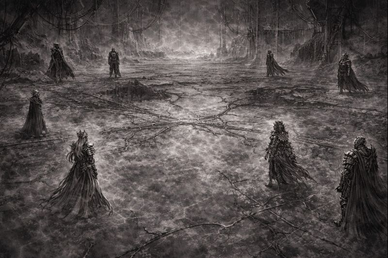
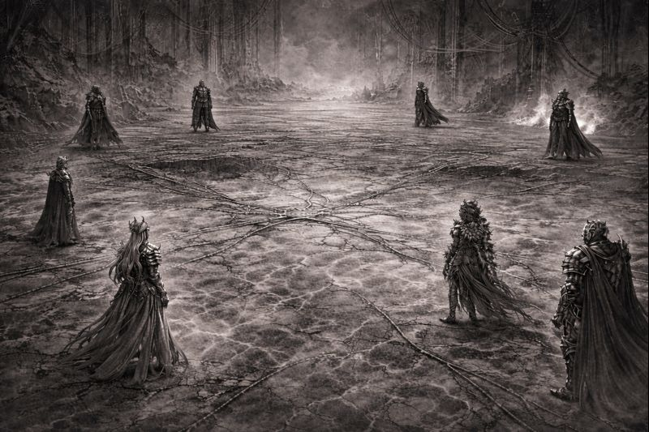
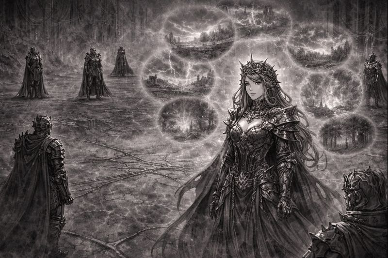
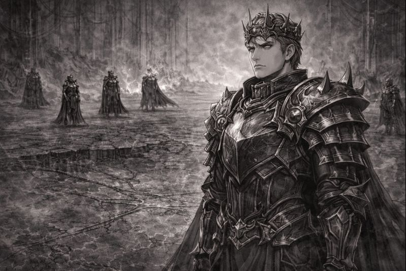
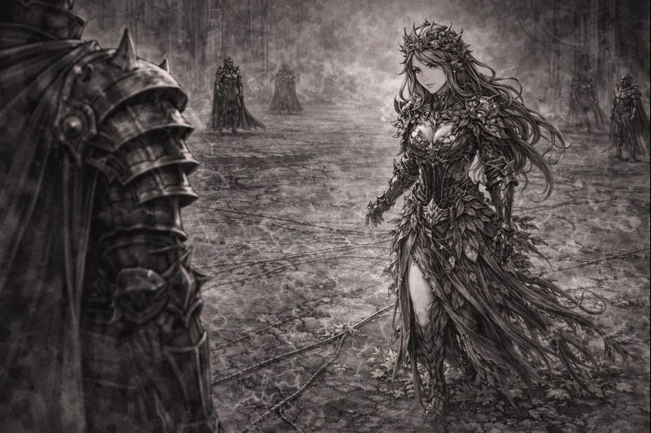
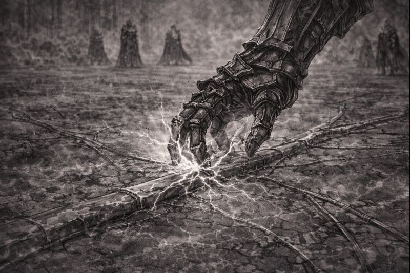
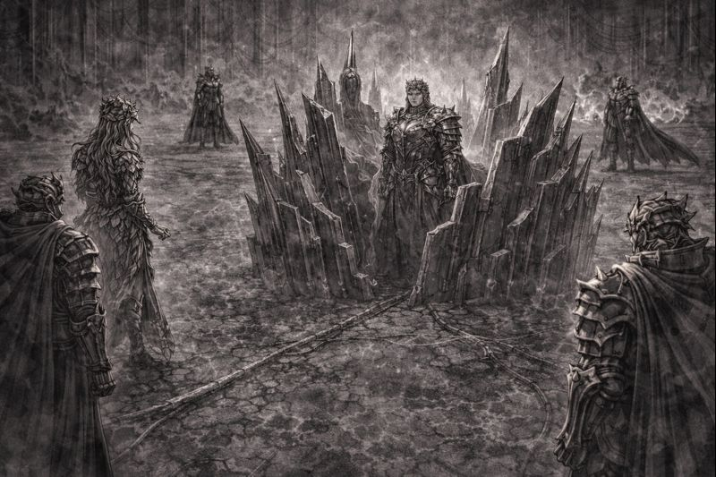
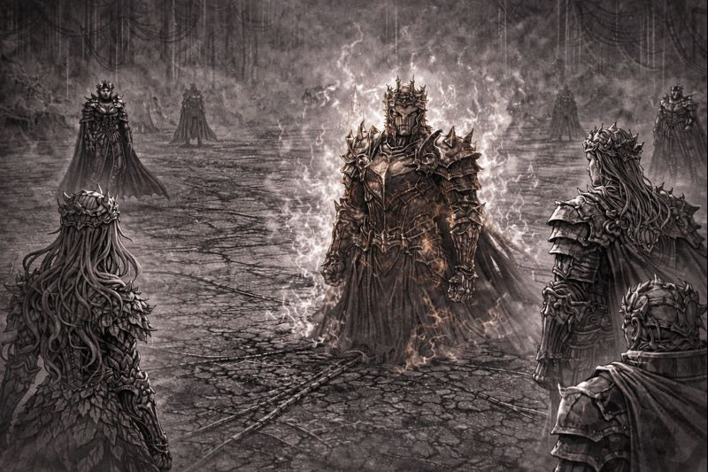
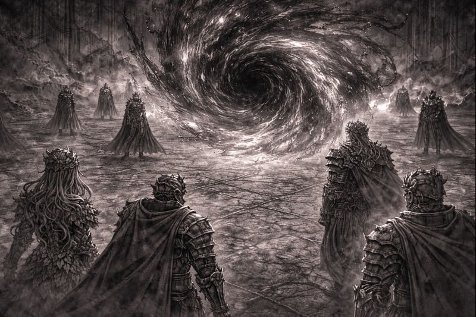

CHAPTER 12
The First Fracture

They did not arrive together.
They did not arrive willingly.
One by one, the Sovereigns entered the Nexus—
not as a circle,
not as equals,
but as rulers measuring distance.

Silence settled between them.
Not the calm of peace—
but the pause before truth is spoken.
Iron traced faint paths beneath their feet,
patient and unnoticed.

Aetheria stepped forward alone.
“This is not coincidence,” she said.
“It is pattern.”
“The realms are quiet because something
is holding them still.”

Ferron did not deny it.
“Stability has returned,” he replied.
“Suffering has lessened.”
“You call it corruption.
I call it responsibility.”

Verdani stepped forward carefully.
“Stillness is not peace,” she said.
“It is life being told to wait.”
“And life cannot wait forever.”

A hand reached down.
Power pressed softly against iron.
Not attack.
Not rebellion.
The iron resisted.

Iron rose instinctively.
Shields formed around Ferron.
Barriers shaped by will alone.
Protection—
that felt like accusation.

No one chose a side.
Yet distance appeared.
Words slowed.
Gazes hardened.
The fracture existed.

Above the Nexus,
where no throne stood,
shadow bent without form.
It did not interfere.
It did not hurry.
It waited.
TO BE CONTINUED